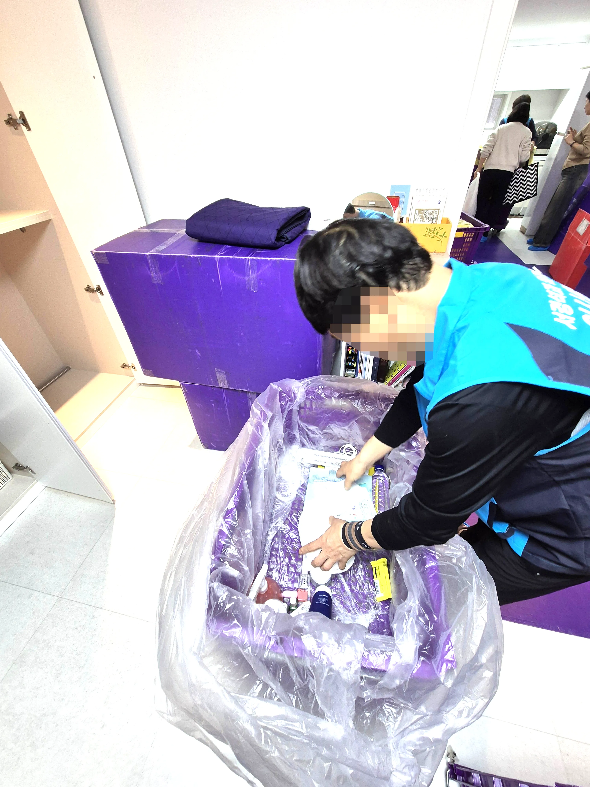
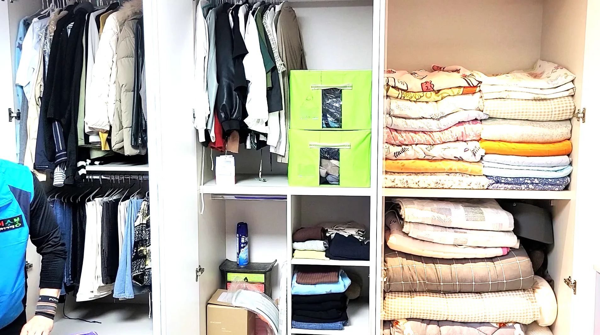
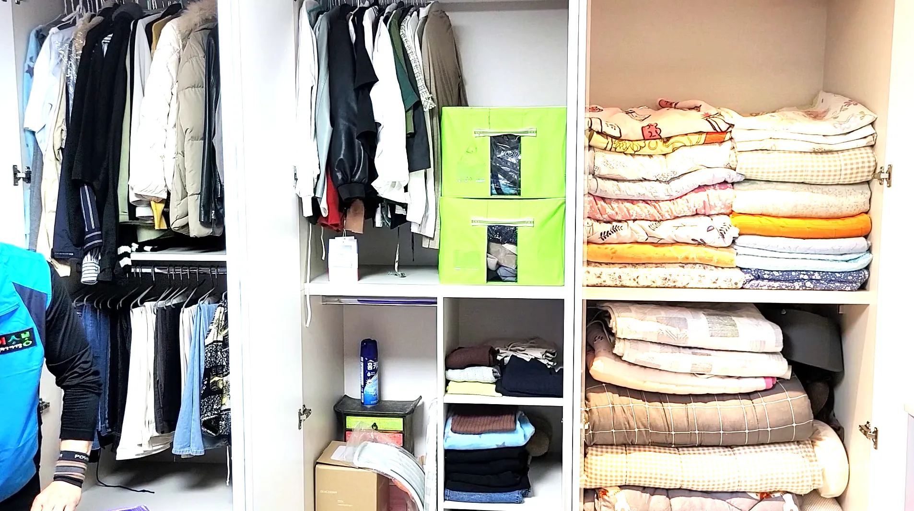
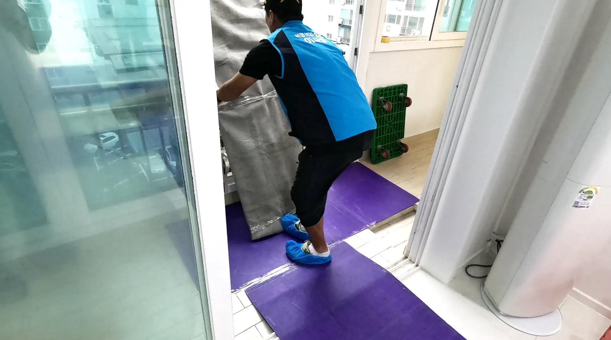
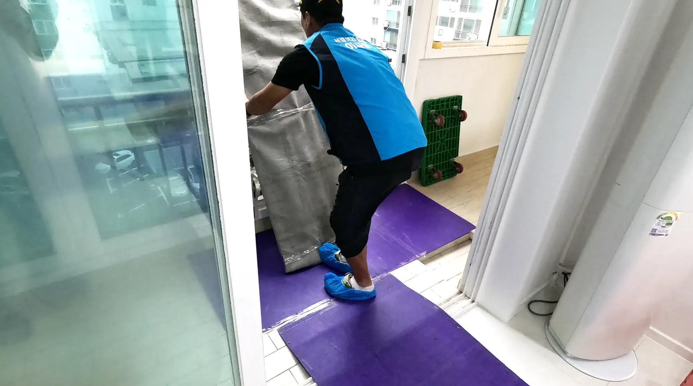

상록구포장이사
상록구 이사가격 비용 어떻게될까요 100%무료견적 보기상록구포장이사포장이사는 단순한 운송 서비스가 아닙니다. 전문 인력이 짐 포장부터 운송, 정리까지 전 과정을 책임지기 때문에, 일반 이사보다 훨씬 효율적입니다. 처음 이용하는 사람들도 미리 준비만 잘 하면, 시간과 비용 모두 절약할 수 있습니다. 포장이사를 선택할 때 가장 먼저 고려해야 할 것은 업체 신뢰성과 서비스 범위입니다. 포장이사 업체마다 제공하는 서비스가 조금씩 다르기 때문에, 포장이사 비용 비교와 무료 견적 신청을 통해 지역별 가격과 후기를 확인하는 것이 좋습니다. 특히 고가 가전이나 깨지기 쉬운 물품이 있다면 포장이사 선택이 안전 측면에서 필수적입니다. 예약 전에는 이사 날짜, 필요한 인원, 운송 물품 리스트 등을 업체에 미리 전달하는 것이 좋습니다. 이렇게 하면 포장 인원과 차량 배치가 효율적으로 계획되며, 당일 불필요한 혼란을 줄일 수 있습니다. 또한 요즘은 웹사이트나 앱을 통해 간편하게 포장이사 견적 신청과 결제까지 가능해, 스마트하게 이사를 준비할 수 있습니다. 정리하면, 포장이사는 체력과 시간을 아끼면서 안전하게 이사를 마칠 수 있는 최적의 방법입니다. 무료 견적 비교를 통해 적절한 업체를 선택하고, 계획적으로 준비한다면 이사 과정에서 발생할 수 있는 스트레스와 불편을 크게 줄일 수 있습니다.
포장이사를 처음 이용할 때는 무엇을 준비해야 할지 막막할 수 있습니다. 하지만 몇 가지 핵심 포인트만 챙기면, 시간과 비용을 절약하면서 안전하게 이사를 마칠 수 있습니다. 첫 번째로, 이사 날짜와 시간을 확정하고, 필요한 인원과 차량 규모를 업체와 미리 조율하는 것이 중요합니다. 포장이사 업체마다 제공하는 서비스 범위가 다르기 때문에, 포장이사 비용 비교와 무료 견적 신청을 통해 적합한 업체를 선택하는 것이 효율적입니다. 두 번째로, 포장할 물품을 분류하고, 깨지기 쉬운 물건이나 고가 전자제품은 별도로 표시합니다. 이를 통해 포장팀이 안전하게 운송할 수 있으며, 운송 중 손상을 방지할 수 있습니다. 세 번째로, 포장이사 당일에는 업체의 작업안전 보장, 편리함을 모두 잡을 수 있는 최고의 선택! 🏠✨ 무료 견적 비교를 통해 내게 맞는 업체를 찾고, 똑똑하게 이사 준비를 시작해 보세요. “포장이사 비
상록구 이사가격 비용 어떻게될까요 100%무료견적 보기

이사를 준비할 때 가장 중요한 것 중 하나가 바로 이삿짐센터 선택입니다. 아무리 좋은 집으로 이사해도, 짐이 파손되거나 분실되면 이사 스트레스가 배가 되기 때문이죠. 그래서 많은 사람들이 이삿짐센터 비교와 무료 견적 신청을 통해 신뢰할 수 있는 업체를 선택합니다. 이삿짐센터를 고를 때는 첫째, 업체 신뢰도와 후기를 확인하세요. 실제 이용자 후기와 평점, 서비스 범위를 체크하면 예상치 못한 사고를 줄일 수 있습니다. 둘째, 포장 서비스 여부를 확인하는 것이 좋습니다. 포장이 가능하면 고가 가전이나 깨지기 쉬운 물품도 안전하게 운송할 수 있습니다. 또한, 이삿짐센터 비용은 업체마다 크게 차이가 나므로, 지역별 이삿짐센터 비용 비교를 통해 합리적인 가격을 선택하는 것이 중요합니다. 요즘은 웹사이트나 앱에서 이삿짐센터 무료견적을 신청하면, 집에서 편하게 여러 업체의 가격과 서비스를 비교할 수 있습니다. 마지막으로, 이사 당일에는 작업 진행 상황 확인과 특별 관리 물품 전달을 잊지 마세요. 작은 체크만으로도 이사 후 만족도가 크게 달라집니다. 정리하면, 신뢰할 수 있는 이삿짐센터를 선택하고, 미리 견적과 서비스 범위를 비교하며 준비하는 것이 안전하고 효율적인 이사의 핵심입니다. 이삿짐센터 견적 비교, 무료견적 신청을 활용해 스마트하게 이사 계획을 세우세요.
🚛100% 무료견적 알아보기🚛 

상록구 이사가격 비용 어떻게될까요 100%무료견적 보기이사를 준비할 때 가장 중요한 것 중 하나가 바로 이삿짐센터 선택입니다. 아무리 좋은 집으로 이사해도, 짐이 파손되거나 분실되면 이사 스트레스가 배가 되기 때문이죠. 그래서 많은 사람들이 이삿짐센터 비교와 무료 견적 신청을 통해 신뢰할 수 있는 업체를 선택합니다. 이삿짐센터를 고를 때는 첫째, 업체 신뢰도와 후기를 확인하세요. 실제 이용자 후기와 평점, 서비스 범위를 체크하면 예상치 못한 사고를 줄일 수 있습니다. 둘째, 포장 서비스 여부를 확인하는 것이 좋습니다. 포장이 가능하면 고가 가전이나 깨지기 쉬운 물품도 안전하게 운송할 수 있습니다. 또한, 이삿짐센터 비용은 업체마다 크게 차이가 나므로, 지역별 이삿짐센터 비용 비교를 통해 합리적인 가격을 선택하는 것이 중요합니다. 요즘은 웹사이트나 앱에서 이삿짐센터 무료견적을 신청하면, 집에서 편하게 여러 업체의 가격과 서비스를 비교할 수 있습니다. 마지막으로, 이사 당일에는 작업 진행 상황 확인과 특별 관리 물품 전달을 잊지 마세요. 작은 체크만으로도 이사 후 만족도가 크게 달라집니다. 정리하면, 신뢰할 수 있는 이삿짐센터를 선택하고, 미리 견적과 서비스 범위를 비교하며 준비하는 것이 안전하고 효율적인 이사의 핵심입니다. 이삿짐센터 견적 비교, 무료견적 신청을 활용해 스마트하게 이사 계획을 세우세요.
포장이사 무료견적 서비스
| 상록구포장이사 | 상록구이사업체 | 상록구이삿짐센터 |
|---|---|---|
| 상록구포장이사 | 포장이사비교견적 | 이사무료견적 |
| 상록구이사업체 | 이삿짐센터 | 포장이사업체비교 |
| 상록구이삿짐센터 | 포장이사가격 | 이사업체추천 |
 

FAQ
전국 어디든 100% 무료 비교견적 가능합니다.
포장이사는 전문 팀이 짐 포장부터 운송, 정리까지 전 과정을 책임지는 서비스입니다. 일반 이사는 운송만 제공하는 경우가 많아, 포장과 정리를 직접 해야 하므로 체력과 시간이 많이 필요합니다. 포장이사를 이용하면 시간과 비용을 절약하면서 안전하게 이사를 진행할 수 있습니다.